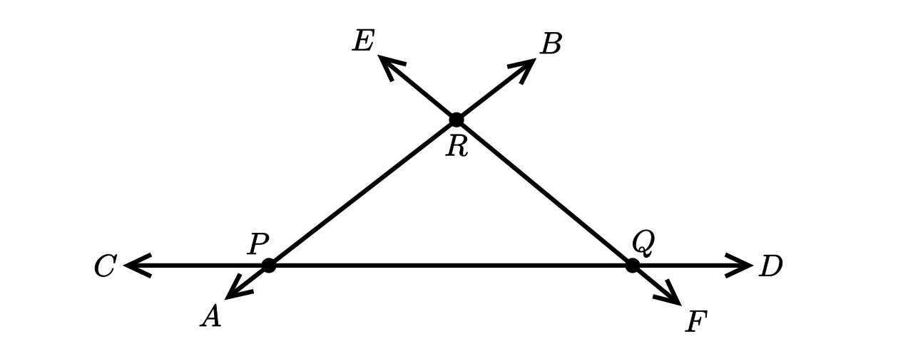
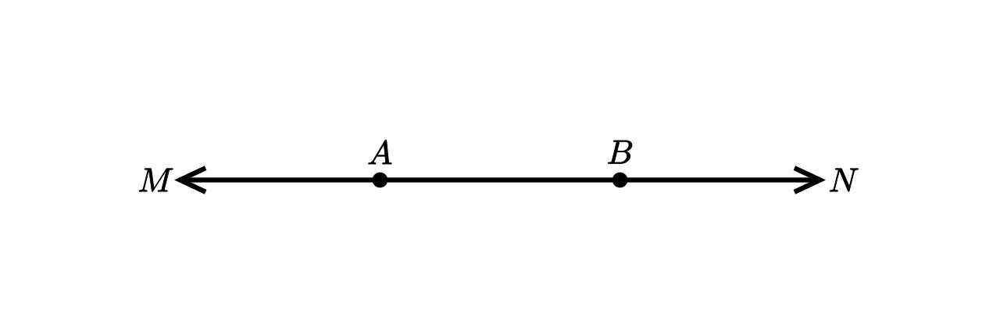

| ၁။ | အမှတ်တစ်ခု ကိုဖြတ်၍ မျဉ်းဖြောင့်မည်မျှ ဆွဲနိုင်သနည်း။ |
| ၂။ | အမှတ်နှစ်ခု ကိုဖြတ်၍ မျဉ်းဖြောင့်မည်မျှ ဆွဲနိုင်သနည်း။ |
| ၃။ | မျဉ်းဖြောင့်တစ်ကြောင်းတည်းပေါ်တွင် မရှိသော အမှတ်သုံးခုကိုယူ၍ အမှတ်နှစ်ခုစီကိုဖြတ်သော မျဉ်းဖြောင့်များဆွဲလျှင် မျဉ်းဖြောင့်မည်မျှ ရနိုင်မည်နည်း။ ထိုမျဉ်းဖြောင့်များကို ဆွဲသားပါ။ |
| ၄။ | ပေးထားသောအမှတ်လေးခုမှ မည်သည့်အမှတ်သုံးခုကိုမဆိုယူလိုက်တိုင်း မျဉ်းဖြောင့်တစ်ကြောင်းတည်းပေါ်၌ မကျရောက်လျှင် အမှတ်နှစ်ခုစီကိုဖြတ်၍ဆွဲသောမျဉ်းဖြောင့် မည်မျှရနိုင်သနည်း။ ထိုမျဉ်းဖြောင့်များကို ဆွဲပါ။ |
| ၅။ | ပုံ ၂.၉ ရှိမျဉ်းဖြောင့်နှစ်ကြောင်းစီပေါ်တွင်ရှိသော ဆုံမှတ်များ (မျဉ်းဖြောင့်များ၏ ဖြတ်မှတ်များ) ကို ဖော်ပြပါ။

ပုံ ၂.၉
|
| ၆။ | မျဉ်းဖြောင့်နှစ်ကြောင်းသည် အမှတ်မည်မျှ၌ တစ်ခုကိုတစ်ခုဖြတ်သနည်း။ |
| ၇။ | မျဉ်းဖြောင့်သုံကြောင်းအတွက် ဖြစ်နိုင်သည့် ဖြတ်မှတ်အရေအတွက်အများဆုံးကို ရှာပါ။ |
| ၈။ | အမှတ် O ကိုအစမှတ်အဖြစ်ထား၍ မျဉ်းတန်းငါးခုကို ဆွဲပါ။ |
| ၉။ | ပေးရင်းအမှတ်နှစ်ခုကို ဖြတ်သောမျဉ်းတန်း မည်မျှရရှိနိုင်သနည်း။ |
| ၁၀။ | မျဉ်းဖြောင့်တစ်ခုပေါ်ရှိ အမှတ်တစ်ခုသည် ယင်းမျဉ်းဖြောင့်ကို မျဉ်းတန်းမည်မျှရရှိအောင် ပိုင်းဖြတ်သနည်း။ ထိုမျဉ်းတန်းတို့၏ ဦးလှည့်ဘက်များ တူညီပါသလား။ |
| ၁၁။ | ပုံ ၂.၁၀ ၌ A နှင့် B တစ်ခုစီကို စမှတ်များအဖြစ် အသီးသီးယူလျက် ဆွဲသားထားသော မျဉ်းတန်းများ၏ အမည်များကို ဖော်ပြပါ။ မျဉ်းတန်း AM နှင့် မျဉ်းတန်း AN တို့တွင် ဘုံအမှတ် ရှိပါသလား။

ပုံ ၂.၁၀
|